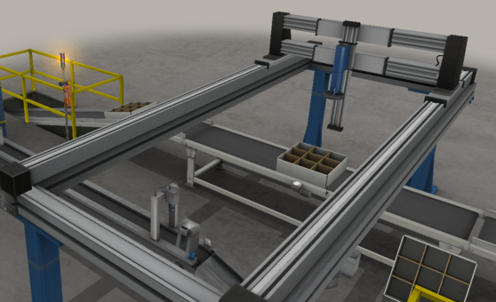
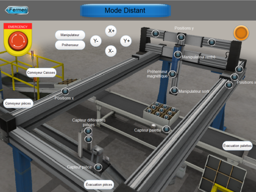

Mes Projets
Stage chez Sogetrel
J’ai choisi d’inclure ce stage dans mon portfolio car il représente ma première immersion significative dans le monde professionnel. Réalisé au sein de l’entreprise Sogetrel, ce stage s’est déroulé sur 8 semaines dans le secteur IRVE (Infrastructures de Recharge pour Véhicules Électriques). Il m’a permis de participer activement à la mise en œuvre et à la maintenance de bornes de recharge, dans des environnements variés : centres de tri, institutions publiques, ou sites logistiques.
Le contexte était technique et dynamique : chaque chantier exigeait une étude préalable, la lecture de plans, l’analyse du terrain et le suivi rigoureux de normes électriques. J’ai ainsi pris part à toutes les phases : tirage de câbles, pose des bornes, raccordements, vérification de la mise à la terre, intégration dans les tableaux électriques, et tests de mise en service.
Parmi les apprentissages critiques, j’ai renforcé mes compétences en lecture de plans d’installation électrique, en diagnostic de pannes, et en gestion de chantier. J’ai aussi appris à travailler avec différentes équipes (électriciens, conducteurs de travaux, techniciens IRVE) et à manipuler des outils professionnels (VAT, sertisseuses, perforateurs, etc.).
Les ressources mises à ma disposition ont été multiples : fiches techniques, accompagnement du tuteur, documentation chantier, outils spécifiques IRVE. Mon implication a été totale : j’ai mené plusieurs opérations de maintenance en autonomie et proposé des ajustements face à des problèmes concrets (bornes non alimentées, cartes RFID défectueuses, cheminement de câbles obstrué).
Ce stage m’a donné des perspectives claires : travailler sur des installations industrielles complexes, où la rigueur et la sécurité sont essentielles. Il m’a également permis de découvrir l’importance du travail en amont (visite de site, analyse du TGBT, coordination logistique), souvent aussi critique que la phase d’exécution.
Avec du recul, j’ai pris conscience que l’efficacité d’un technicien ou d’un ingénieur ne repose pas seulement sur ses compétences techniques, mais aussi sur sa capacité à s’adapter rapidement, à communiquer clairement, et à gérer les imprévus sur le terrain.


Projets Palettiseur
J’ai choisi de présenter ce projet car il représente l’un des travaux les plus complets et enrichissants de ma formation. Il s’inscrit dans le cadre d’une SAE de 3ᵉ année de BUT GEII, dont le but était de concevoir et programmer un système automatisé de palettisation de cartons, intégrant une supervision locale et distante, avec prise en main d’un second système Pick & Place.
Ce projet m’a permis d’approfondir plusieurs apprentissages critiques liés à l’automatisation industrielle : modélisation GEMMA, élaboration de Grafcets de sécurité, de conduite et de production, ainsi que programmation d’un automate Schneider Electric avec Unity Pro XL en langage Ladder. J’ai également renforcé mes compétences en supervision en réalisant une IHM complète à l’aide du logiciel EasyBuilder Pro, me permettant de créer une interface intuitive, structurée autour de plusieurs vues (ascenseur, mise en palette, monte-charge) et intégrant les différents modes de fonctionnement (manuel, automatique, distant).
J’ai mobilisé de nombreuses ressources tout au long du projet, notamment la documentation technique des automates Schneider, les fiches pédagogiques fournies par les enseignants, ainsi que les outils logiciels Unity Pro XL et EasyBuilder Pro. Le travail en binôme m’a aussi permis de développer ma capacité à collaborer efficacement, à répartir les tâches et à résoudre les problèmes techniques ensemble.
Mon implication a été constante, tant dans la phase de conception que dans la mise en œuvre concrète du système. J’ai pris en charge une grande partie de la programmation de l’automate ainsi que le développement de l’IHM. J’ai également participé activement aux tests, aux validations des modes de fonctionnement et à l’amélioration continue du système.
Ce projet m’a ouvert des perspectives concrètes en automatisme et supervision industrielle. Il m’a conforté dans mon choix de poursuivre dans ce domaine, et représente une expérience valorisable en vue de stages ou d’une insertion professionnelle dans l’automatisation.
Avec du recul, ce projet m’a permis de prendre conscience de l’importance d’une approche méthodique, du respect des normes de sécurité, et de la rigueur nécessaire dans la programmation industrielle. Il m’a aussi démontré que la supervision est un outil essentiel pour garantir une bonne interaction homme-machine. Ce travail m’a donné une vision concrète des exigences d’un système automatisé industriel, de la modélisation à la mise en service.

- 
- 
Projets Robot Scara
Dans le cadre d'une SAE de 3ᵉ année de BUT GEII, j’ai été chargé d’améliorer une cellule robotisée équipée d’un robot SCARA dans un atelier de production simulé. Le client souhaitait automatiser le remplissage de la plaque de stockage des boîtes, sans avoir à interrompre le fonctionnement ni à faire intervenir un opérateur manuellement. Une solution par vision industrielle était initialement attendue, en lien direct avec les compétences acquises lors d’un TP de vision industrielle.
J’ai d’abord exploré cette piste en sélectionnant une caméra en fonction de plusieurs critères importants : le champ de vision nécessaire pour détecter les boîtes sur le convoyeur, la résolution adaptée à la taille et au contraste des objets, le choix de l’objectif (distance focale, profondeur de champ), ainsi que l’éclairage (angle, intensité, homogénéité) afin d’assurer une bonne détection quelles que soient les conditions. Cependant, j’ai rencontré des difficultés techniques avec la caméra choisie, rendant la solution par vision peu fiable dans le cadre du projet.
Face à ces contraintes, j’ai pris l’initiative de développer une solution alternative sans vision. J’ai conçu et imprimé en 3D une pièce mécanique, accompagnée d’un support également imprimé, permettant de décaler les boîtes automatiquement vers un côté du convoyeur. Cette solution simple et efficace permet au robot SCARA de saisir les boîtes et de les déposer sur la plaque sans intervention humaine. J’ai intégré ce mode de fonctionnement dans le programme de la cellule via le logiciel RobotStudio développé par ABB, en créant un programme entièrement personnalisé. J’ai également ajouté une amélioration du mode de palettisation des boîtes déjà existant. J’ai ajusté la cadence du robot afin d’optimiser le débit de production, tout en corrigeant des problèmes de synchronisation et de bourrage pouvant bloquer la ligne.
Ce projet m’a permis d’approfondir mes compétences en programmation de robots industriels, en particulier via RobotStudio, ainsi que mes connaissances en conception mécanique grâce à l'utilisation de l'impression 3D pour créer des solutions alternatives. J’ai pu expérimenter des méthodes de prototypage rapide tout en tenant compte des contraintes d’intégration dans un système existant.
En parallèle de ces améliorations fonctionnelles, j’ai également retravaillé plusieurs pages de l’interface homme-machine (IHM) en utilisant ScreenMaker, l’outil intégré à RobotStudio. Mon objectif était de rendre l’IHM plus intuitive et mieux adaptée aux nouveaux modes de fonctionnement que j’ai ajoutés. J’ai réorganisé les boutons, clarifié les messages d’état et ajouté des voyants pour indiquer les différents modes actifs, tout en veillant à conserver une ergonomie cohérente avec les standards industriels. Ces ajustements ont facilité la prise en main du système pour l’utilisateur final et renforcé la lisibilité globale du processus automatisé.
J’ai été pleinement impliqué dans toutes les étapes du projet, de la compréhension du besoin client à la réalisation technique, en passant par les essais et la documentation. Les documents finaux ont été rédigés dans un souci de clarté pour permettre à un technicien externe d’installer et de maintenir les nouvelles fonctionnalités sans difficulté.
Avec du recul, ce projet a été une expérience enrichissante qui m’a appris à être agile dans mes choix techniques et à privilégier la fiabilité et la simplicité dans un environnement industriel. J’en retire une meilleure compréhension des interactions entre la robotique, la mécanique, et les attentes concrètes d’un client industriel.
Stage chez Othua
EN COURS DE PROGRAMMATION